Fotos del primer KC
Fotos del primer KC
|
|
|
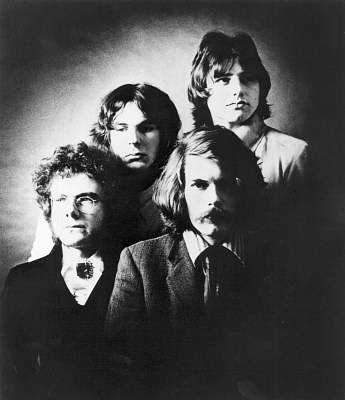 1969 - Fotos del primer KCEn Hyde Park (Londres), recital de los Rolling Stones, 5 de julio de 1969 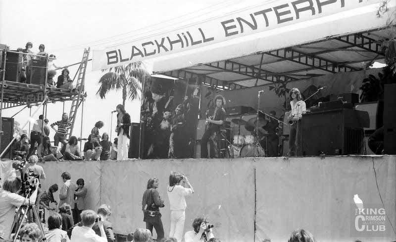 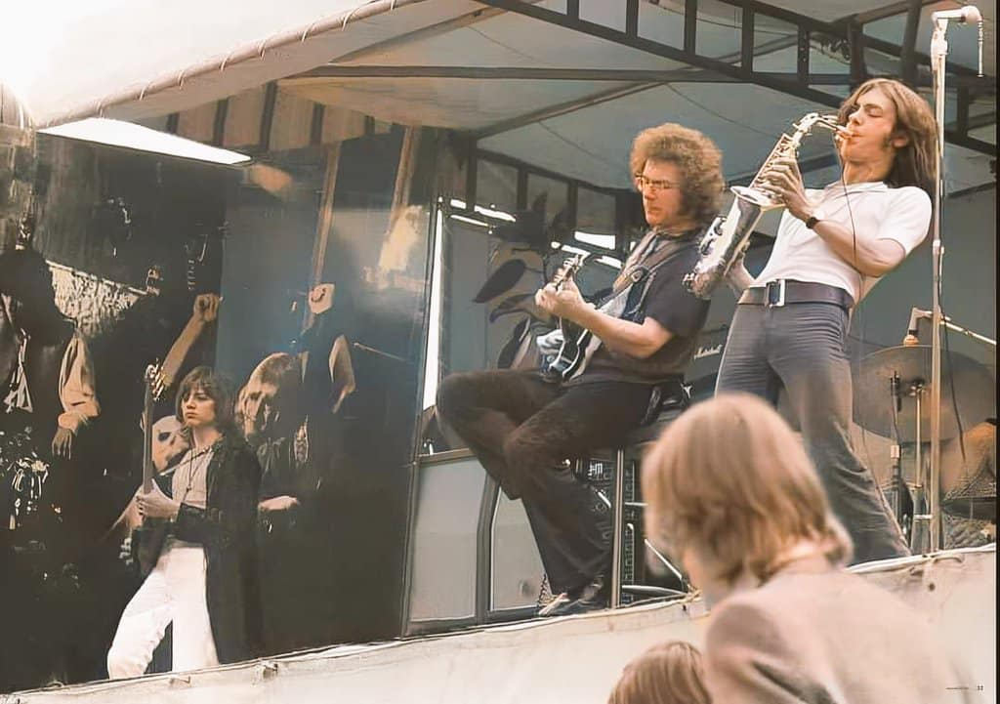
En The Marquee (Londres), 6 de julio de 1969. 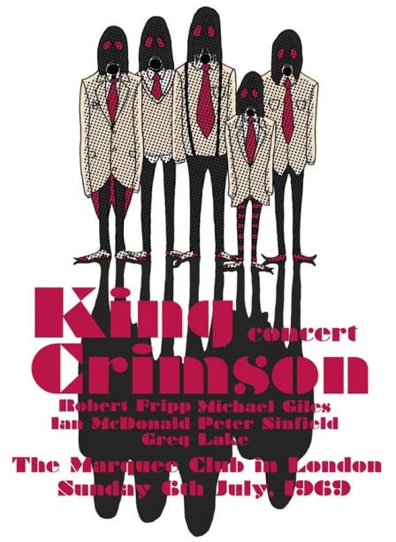 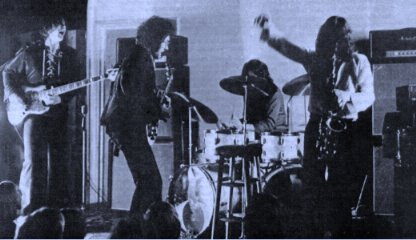
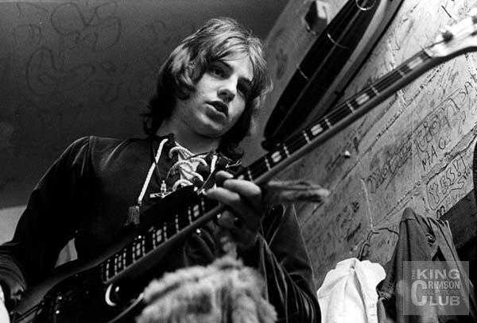 
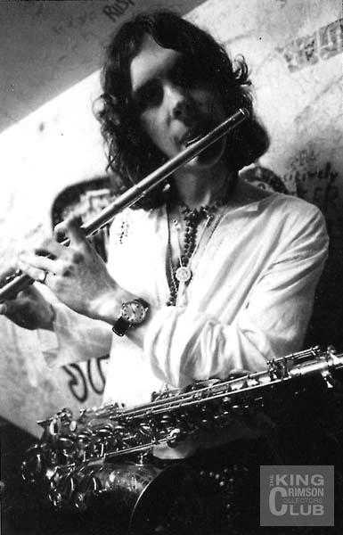 
KC en gira a fines del '69 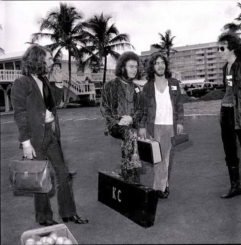 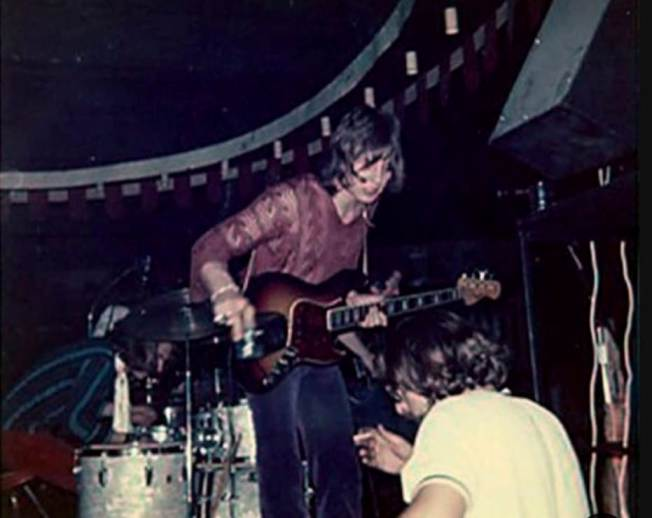 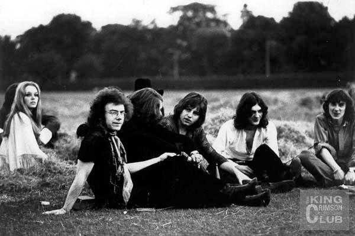 
Arriba izquierda: Fripp, Michael Giles, Lake, McDonald y Sinfield. Derecha: Michael Giles y Ian McDonald
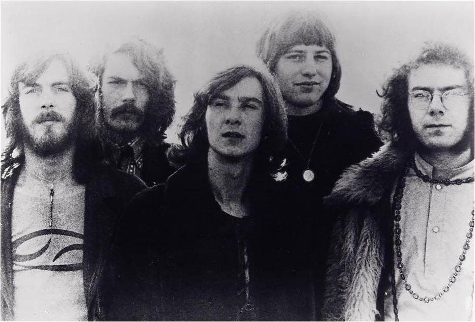 Arriba, de izquierda a derecha: McDonald, Giles, Sinfield, Lake y Fripp
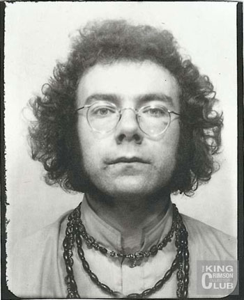 
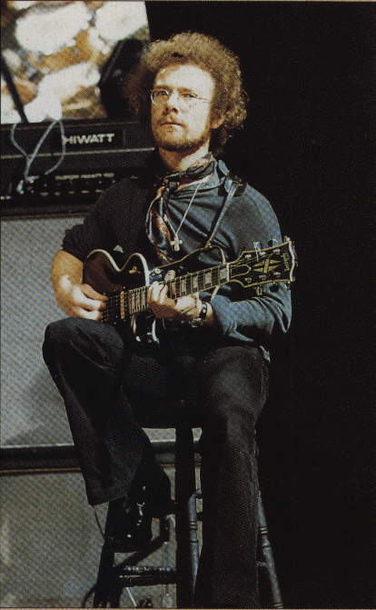 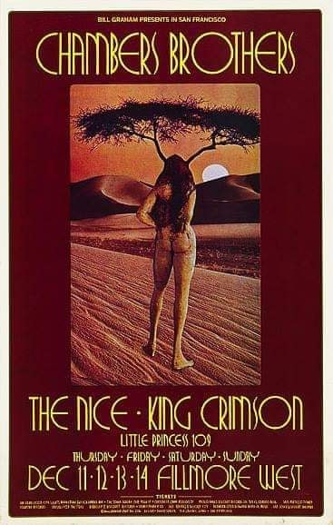 Arriba a la derecha, afiche de los conciertos compartidos por King Crimson y The nice, durante los cuales se conocieron Greg Lake y Keith Emerson; tocaron juntos algunas piezas en los ensayos y quedaron en formar un trío cuando volvieran a Inglaterra.
Arriba: 1997. Fripp, Michael Giles, Lake y McDonald en el lanzamiento del cd "Epitaph", con grabaciones del '69.
|


 Fripp observa a Mick Jagger en escena
Fripp observa a Mick Jagger en escena Diciembre
'69
Diciembre
'69